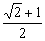
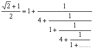
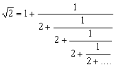

平方根連續分式
更新日期: 2011年2月3日
程式一用作計算平方根(√x + y) / z的連續分式，其中x為非完全平方的正整數，y及z整數。利用這個程式亦可以計算平方根或分數的連續分式。與連續分式程式比較，這個程式雖然只能計算特定形式的連續分式，但改善了誤差的問題，若果輸入的數值不是很大，誤差是0，亦即是無論計幾多項(循環)亦不會出現誤差。
程式二只能計算平方根的連續分式，但平方根的連續分式可以表達成[整數 ; 重複部份]，程式較特別之處是可以找出整數及重複部份，亦即是找到整個重複部份程式會自動終止。
程式一 (68 bytes，使用記憶A、B及C)
?→A: ?→B: ?→C: C√( A→A: BC→B: C2→C:
While 1: Fix 0: Rnd( (A + B) ÷ C - . 5: Norm 1◢
AnsC - B→B: C-1(A2 - Ans2→C: WhileEnd
程式二 (60 bytes，使用記憶A、X、Y及M)
?→A: Pol( 1 , 0: MM-: Fix 0: While M- 2:
X=1M+: Rnd( X-1(√( A ) + Y) - . 5◢
AnsX - Y→Y: X-1(A - Ans2→X:
WhileEnd: Norm 1
註: 連續分式的形式如下:
程式一例題1: 計算以下算式的連續分式

按 Prog 1 再按 2 EXE 1 EXE 2 EXE (顯示1)
EXE (顯示4) EXE (顯示1) EXE (顯示4) ....
所以答案為

程式一例題2: 以連續分式表示 25/16 值。
按 Prog 1 再按 0 EXE 25 EXE 16 EXE (顯示1) EXE (顯示1) EXE (顯示1)
EXE (顯示3) EXE (顯示2) EXE (顯示Math ERROR表示計算完結)
所以答案為

程式一例題3: 以連續分式表示 √2 。
按 Prog 1 再按 2 EXE 0 EXE 1 EXE (顯示1) EXE (顯示2) EXE (顯示2)
EXE (顯示2) ...........
所以答案為

程式二例題: 試找出√14的連續分式。
按 Prog 1 再按 14 EXE (顯示整數部份為 3)
EXE (顯示 1) EXE (顯示 2) EXE (顯示 1) EXE (顯示6)
EXE (顯示Norm 1及0表示計算完結，亦即是重複部份為 1 , 2, 1, 6 )
所以√14 = [ 3; 1, 2, 1, 6, .....]
返回 CASIO fx-50FH、fx-3650P II、fx-50FH II及fx-50F PLUS 程式集